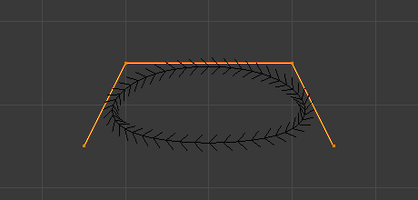
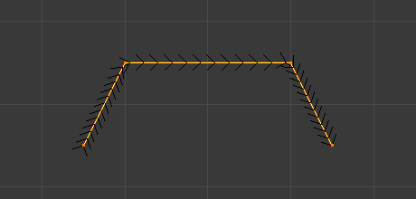

Active Spline¶
Reference
| Mode: | Edit Mode |
|---|---|
| Menu: |
The Active Spline panel is used in Edit Mode to control properties of the currently selected spline.
Common Options
- Cyclic U
Closes the active spline.

Default NURBS curve.
A NURBS curve with Cyclic applied.
- Resolution U
- Alters the resolution of each segment by changing the number of subdivisions.
- Smooth
- Use Smooth Shading for any 3D geometry.
Bézier¶
Active Spline panel: Bézier Spline.
- Cyclic U
- See Common Options.
- Resolution U
- See Common Options.
- Interpolation Tilt
- Alters how the tilt of a segment is calculated.
- Radius
- Alters how the radius of a beveled curve is calculated. The effects are easier to see after increasing the radius.
- Smooth
- See Common Options.
NURBS¶
One of the characteristics of a NURBS object is the knot vector. This is a sequence of numbers used to determine the influence of the control points on the curve. While you cannot edit the knot vectors directly, you can influence them through the Endpoint and Bézier options in the Active Spline panel. Note that, the Endpoint and Bézier settings only apply to open NURBS curves.
Active Spline: NURBS Spline.
- Cyclic U
- See Common Options.
- Bézier U
- Makes the NURBS curve act like a Bézier curve. The NURBS control points act like Free handles of Bézier curve. Depending on the Order, 3 or 4 control points form one curve segment. Cyclic and Endpoint must be disabled for this option to work.
- Endpoint U
Makes the curve contact the end control points. Cyclic must be disabled for this option to work.
Default NURBS curve.

A NURBS curve with Endpoint enabled.
- Order U
The order of the NURBS curve determines the area of influence of the control points over the curve. Higher order values means that a single control point has a greater influence over a greater relative proportion of the curve. The valid range of Order values is 2-6 depending on the number of control points present in the curve.
NURBS curves with orders of 4.
NURBS curves with orders of 2.
- Resolution U
- See Common Options.
- Smooth
- See Common Options.